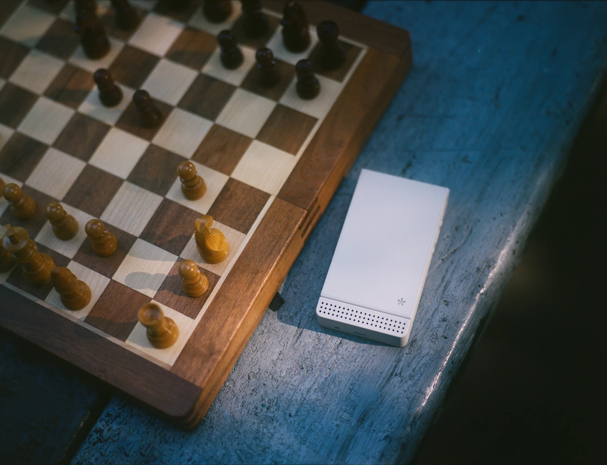
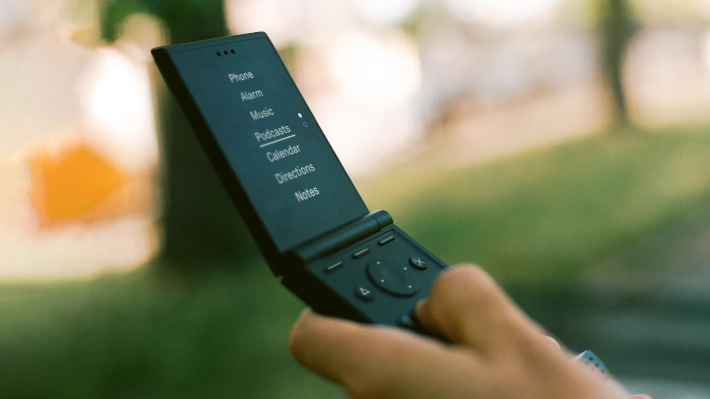
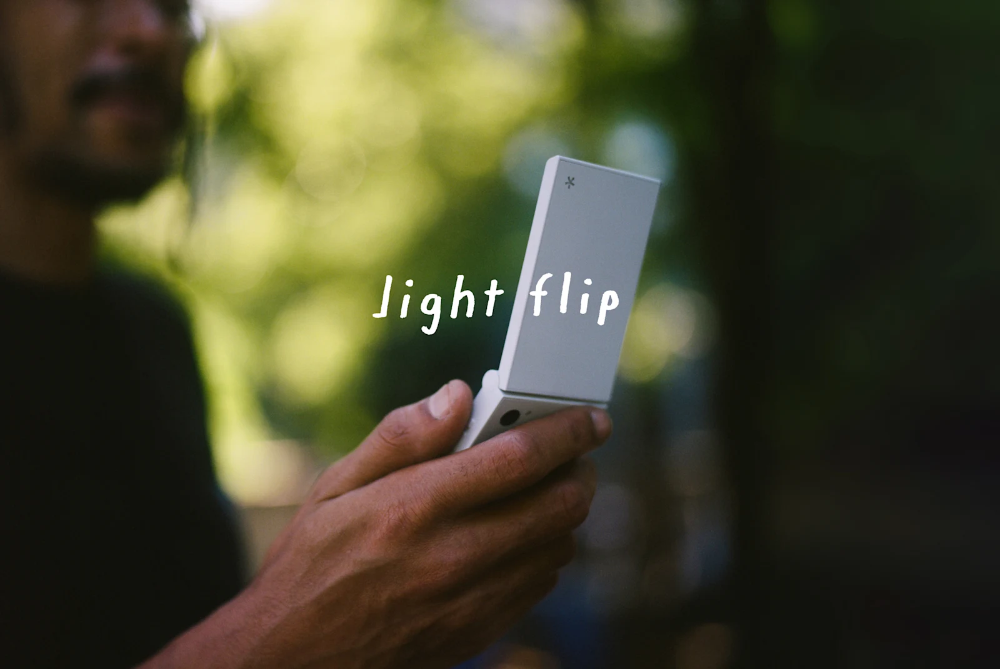

Light Flip 소개
불필요한 기능을 덜어낸 미니멀리즘 모바일 기기로 알려진 하드웨어 스타트업 Light가 차기 제품인 Light Flip을 발표했습니다. 이 신제품은 클래식한 클램쉘(clamshell) 형태를 채택하면서도, 의도적인 절제와 미니멀리즘이라는 브랜드의 핵심 철학을 유지합니다.
Light Flip 사양
이 기기는 매트 마감 처리가 된 480 x 640 해상도의 2.8인치 OLED 디스플레이를 탑재했습니다. 색상은 Black, Navy, Red, Pink, Yellow, Light Gray의 총 6가지 옵션으로 제공됩니다.
기본 하드웨어 사양은 다음과 같습니다:
- 배터리: 사용자 교체 가능 1800mAh
- 무게 및 내구성: 160g, IP54 등급
- 오디오 및 충전: 3.5mm 헤드폰 잭, 스테레오 스피커, USB-C 2.0 포트
- 기타 기능: 액세서리 부착용 랜야드 루프 포함
내부 성능 및 네트워크 사양은 다음과 같습니다:
- 프로세서: MediaTek MT8873 옥타코어
- 메모리/저장공간: 6GB LPDDR4X RAM, 128GB UFS 2.2
- 네트워크: 5G, Wi-Fi 6, Bluetooth 5.0
- SIM 지원: 물리적 nano-SIM 슬롯 및 eSIM을 통한 듀얼 SIM 기능
- 카메라: 내장 플래시와 함께 12메가픽셀 이미지를 촬영하는 50메가픽셀 후면 카메라
소프트웨어 및 기능
Light Flip은 웹 브라우저와 소셜 미디어를 제외한 맞춤형 인터페이스인 LightOS로 구동됩니다. 대신 소프트웨어는 다음과 같은 특정 유틸리티 세트를 제공합니다:
- 알람, 계산기, 캘린더, 디렉토리
- 길 찾기, 핫스팟, 음악 플레이어
- 메모, 팟캐스트 플레이어, 날씨
- 타이머, 2FA 인증기
통신은 음성 통화, 오디오 메시지, 그리고 예측형 T9 또는 음성 인식 텍스트를 통한 문자 메시지를 기반으로 합니다. 또한 Light는 커뮤니티에서 제작한 오픈 소스 도구들을 운영체제에 추가할 수 있도록 개발자 프로그램을 도입했습니다.
가격 및 출시 정보
Light Flip의 언락(unlocked) 모델은 $299에 판매됩니다. 또한 자체 서비스 플랜을 통해 제공되며, 2년 약정 시 데이터 1GB와 무제한 통화/문자 포함 월 $39부터, 무제한 요금제는 월 $69로 이용할 수 있습니다.
현재 사전 예약이 진행 중이며, 배송은 2027년 4월 초부터 네 차례에 걸쳐 시작될 예정입니다.
총평
Light Flip은 복잡한 기능을 과감히 제거하고 본질적인 기능에 집중하는 미니멀리즘 철학을 극대화한 클램쉘 형태의 스마트폰입니다. 독자적인 LightOS를 통해 사용자에게 꼭 필요한 도구만을 제공하며, 디지털 환경에서 의도된 제약을 선호하는 사용자들에게 매력적인 선택지가 될 것으로 보입니다.
Light Flip 介绍
被视为去除不必要功能、追求极简主义的硬件初创公司 Light 推出了其下一款产品 Light Flip。这款新产品采用了经典的翻盖（clamshell）设计，同时保留了品牌核心哲学——有意识的克制与简约。
Light Flip 参数
该设备配备了具有磨砂处理的 480 x 640 分辨率的 2.8 英寸 OLED 显示屏。提供 6 种颜色选择：Black、Navy、Red、Pink、Yellow 和 Light Gray。
基础硬件规格如下：
- 电池：1800mAh 可更换电池
- 重量与耐用性：160g，IP54 等级
- 音频与充电：3.5mm 耳机孔、立体声扬声器、USB-C 2.0 端口
- 其他功能：包含用于配件挂载的挂绳环（lanyard loop）
内部性能及网络规格如下：
- 处理器：MediaTek MT8873 八核处理器
- 内存/存储：6GB LPDDR4X RAM，128GB UFS 2.2
- 网络：5G、Wi-Fi 6、Bluetooth 5.0
- SIM 支持：物理 nano-SIM 插槽及支持 eSIM 的双卡功能
- 摄像头：配备内置闪光灯的 5000 万像素后置摄像头
软件与功能
Light Flip 运行在名为 LightOS 的定制界面上，该系统去除了 Web 浏览器和社交媒体。取而代之的是提供以下特定工具集：
- 闹钟、计算器、日历、目录
- 导航、热点、音乐播放器
- 备忘录、播客播放器、天气
- 计时器、2FA 身份验证器
通信功能基于语音通话、音频消息，以及通过预测性 T9 或语音识别输入的短信。此外，Light 还引入了开发者计划，允许用户将社区制作的开源工具添加到操作系统中。
价格与发布信息
Light Flip 的解锁版（unlocked）售价为 $299。此外，该产品还提供自有服务套餐：在 2 年合约下，每月 $39 可包含 1GB 数据及无限通话/短信；无限流量套餐为每月 $69。
目前正在进行预售，预计从 2027 年 4 月初开始分四批进行交付。
总评
Light Flip 是一款极大强化了极简主义哲学的翻盖式智能手机，它果断去除了复杂功能并专注于核心功能。通过独特的 LightOS 提供用户必需的工具，对于在数字环境中偏好“有意识限制”的用户来说，这是一款极具吸引力的选择。
总结
Light Flip 是一款主打简约设计的翻盖式手机，搭载定制的 LightOS 系统并剔除了社交媒体等冗余功能。它提供高性能硬件配置与精简的工具集，旨在为追求数字极简主义、偏好有意识限制的特定用户群体提供独特的移动体验。
Light Flipの紹介
不要な機能を削ぎ落としたミニマリズムなモバイルデバイスとして知られるハードウェアスタートアップ「Light」が、次世代製品の「Light Flip」を発表しました。この新製品はクラシックなクラムシェル（clamshell）形状を採用しながらも、意図的な抑制とミニマリズムというブランドの核となる哲学を維持しています。
Light Flipの仕様
このデバイスは、マット仕上げの480 x 640解像度を持つ2.8インチOLEDディスプレイを搭載しています。カラーバリエーションはBlack、Navy、Red、Pink、Yellow、Light Grayの計6種類から選択可能です。
基本ハードウェア仕様は以下の通りです：
- バッテリー：ユーザー交換可能な1800mAh
- 重量および耐久性：160g、IP54規格
- オーディオおよび充電：3.5mmヘッドフォンジャック、ステレオスピーカー、USB-C 2.0ポート
- その他機能：アクセサリー装着用のランヤードループ付属
内部性能およびネットワーク仕様は以下の通りです：
- プロセッサ：MediaTek MT8873 オクタコア
- メモリ/ストレージ：6GB LPDDR4X RAM、128GB UFS 2.2
- ネットワーク：5G、Wi-Fi 6、Bluetooth 5.0
- SIMサポート：物理的なnano-SIMスロットおよびeSIMによるデュアルSIM機能
- カメラ：内蔵フラッシュを備えた5000万画素の背面カメラ
ソフトウェアと機能
Light Flipは、Webブラウザやソーシャルメディアを除いたカスタムインターフェース「LightOS」で動作します。その代わりに、ソフトウェアは以下のような特定のユーティリティセットを提供します：
- アラーム、計算機、カレンダー、ディレクトリ
- ナビゲーション、ホットスポット、ミュージックプレーヤー
- メモ、ポッドキャストプレーヤー、天気予報
- タイマー、2FA認証機
通信機能は、音声通話、オーディメッセージ、および予測型T9または音声認識テキストによるショートメッセージ（SMS）に基づいています。また、Lightはコミュニティ製のオープンソースツールをOSに追加できるよう、開発者プログラムを導入しています。
価格および発売情報
Light Flipのアンロックモデルは$299で販売されます。また、独自のサービスプランも提供されており、2年契約でデータ1GBと無制限通話/SMSを含む月額$39から、無制限プランは月額$69で利用可能です。
現在予約受付中であり、配送は2027年4月初旬から4回に分けて開始される予定です。
総評
Light Flipは、複雑な機能を大胆に排除し、本質的な機能に焦点を当てるミニマリズムの哲学を極限まで追求したクラムシェル型スマートフォンです。独自のLightOSを通じてユーザーに必要なツールのみを提供しており、デジタル環境において意図的な制約を好むユーザーにとって魅力的な選択肢となるでしょう。
まとめ
Light Flipは、不要な機能を削ぎ落としたミニマリズムな設計とクラムシェル形状を融合させたスマートフォンです。独自のLightOSにより特定のユーティリティに特化しており、デジタル環境において意図的な制約やシンプルさを求めるユーザーに向けたユニークなデバイスとなっています。
Introduction of Light Flip
Light, a hardware startup known for minimalist mobile devices that strip away unnecessary features, has announced its next product, the Light Flip. The new device adopts a classic clamshell form factor while maintaining the brand's core philosophy of intentional restraint and minimalism.
Light Flip Specifications
The device features a matte-finished 2.8-inch OLED display with a resolution of 480 x 640. It is available in six color options: Black, Navy, Red, Pink, Yellow, and Light Gray.
Basic hardware specifications include:
- Battery: User-replaceable 1800mAh
- Weight and Durability: 160g, IP54 rating
- Audio and Charging: 3.5mm headphone jack, stereo speakers, USB-C 2.0 port
- Other Features: Includes a lanyard loop for attaching accessories
Internal performance and network specifications are as follows:
- Processor: MediaTek MT8873 Octa-core
- Memory/Storage: 6GB LPDDR4X RAM, 128GB UFS 2.2
- Network: 5G, Wi-Fi 6, Bluetooth 5.0
- SIM Support: Dual SIM functionality via physical nano-SIM slot and eSIM
- Camera: 50MP rear camera with built-in flash
Software and Features
The Light Flip runs on LightOS, a customized interface that excludes web browsers and social media. Instead, the software provides a specific set of utilities:
- Alarm, Calculator, Calendar, Directory
- Navigation, Hotspot, Music Player
- Memo, Podcast Player, Weather
- Timer, 2FA Authenticator
Communication is based on voice calls, audio messages, and text messages via predictive T9 or voice-recognized text. Additionally, Light has introduced a developer program to allow the addition of community-made open-source tools to the operating system.
Pricing and Availability
The unlocked model of the Light Flip is priced at $299. It is also available through its own service plans: starting from $39 per month for a 2-year contract (including 1GB of data and unlimited talk/text), or $69 per month for an unlimited plan.
Pre-orders are currently underway, with shipping scheduled to begin in four batches starting in early April 2027.
Overall Review
The Light Flip is a clamshell smartphone that maximizes the minimalist philosophy by boldly removing complex features and focusing on essential functions. By providing only necessary tools through its proprietary LightOS, it serves as an attractive option for users who prefer intentional constraints in their digital environment.
Summary
The Light Flip is a minimalist clamshell smartphone from hardware startup Light that focuses on core functionality by excluding web browsers and social media. It features a 2.8-inch OLED display, a MediaTek Octa-core processor, and runs on the custom LightOS. Priced at $299 for the unlocked version, it targets users seeking a simplified digital experience with intentional limitations.


